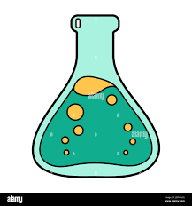

This website has been made because a new and better source of past paper questions in the form of multiple pdfs with dozens have been found, it has been organised in different topics each with dozens of questions under the website 'exampaperpractice'.
It is still recommended though to occassionally use the PMT website as it has one benefit over exampaperpractice, it not only organizes its questions on topic, but also the time of each question.
However the main issue of the website is that you need to have a subscription to find all the different pdfs organized. Note that you don't need a subscription to access the different pdfs, but to find them organized, unlike the website PMT + the pdfs are not as well indexed, and so are harder to find in general.
This website aims to solve this issue, so instead of searching for each pdf manually, one is able to simply choose the right topic/topics from a list and expect to find the corresponding questions.
Thus the function of this website is to easily find the organised biology pdf material made by the group exampaperpractice, see here for the original website with the different biology links for reference, Here for the original website with the different chemistry links for reference and here for the original website with the different physics links for reference.
the only cadbury of this is that in these website, they list 4 pdf titled 'Plant Tissues, Organs and Systems', 'How bonding and structure are related to the properties of substances', 'Microbiology, Immunity and Forensics' and 'forces and motion' which unfortunately I have not been able to find, if you do occur to find it, please email me promptly so that I may update this website.
Anyways, I hope you find this website useful for finding more past paper questions and continue to use it throughout your studies.
Basically I've built this website because the pdfs from the website exampaperpractise are organized like pmt but longer.
Although to be fair, you should still use pmt more as it has newer questions but just don't focus on that for now.
But the thing is, you need a subscription to access them organized on the main website, but the actual pdfs themselves are free.
So if you click the link here for biology, here for chemistry and here for physics, then one of the links (other than the first one in biology) you'll see that you have to pay.
So this website basically is the main website with the organized pdfs, but for free without the subscription.
The only problem is that the main website lists a pdf called 'Plant Tissues, Organs and Systems' which I haven't actually been able to find, so if you do find it then tell me.
Anyways, just use this website every now and then for revision.
Homeostasis
The Human Nervous System
Hormonal Coordination on Humans
Plant hormones
Reproduction
Variation and Evolution
The development of understanding of genetics and evolution
Classification of living organisms

A simple model of the atom, symbols, relative atomic mass, electronic charge and isotopes
The periodic table
Properties of transition metals (chemistry only)
Chemical bonds, ionic, covalent and metallic
Structure and bonding of carbon
Using concentrations of solutions in mol/dm3
Chemical measurements, conservation of mass and the quantitative interpretation of chemical equations
Yield and atom economy of chemical reactions
Use of amount of substance in relation to volumes of gases
Rate of reaction
Reversible reactions and dynamic equilibrium
Carbon compounds as fuels and feedstock
Reactions of alkenes and alcohols
Synthetic and naturally occurring polymers
Purity, formulations and chromatography
Identification of common gases
Identification of ions by chemical and spectroscopic means
Energy changes in a system
Conservation and Dissipation of Energy
National and Global Energy resources
Current, Potential Difference & Resistance
Series and Parallel Circuits
Domestic Uses and Safety
Energy Transfers
Static Electricity
Atoms and Isotopes
Atoms and Nuclear Radiation
Hazards & Uses of Radioactive Emissions and Background Radiation
Nuclear Fission and Fusion
Work Done & Energy Transfer
Forces & Elasticity
Moments, Levers & Gears
Pressure & Pressure Differences in Fluids
Momentum
Permanent & Induced Magnetism, Magnetic Forces and Fields
The Motor Effect
Induced Potential, Transformers and the National Grid